This part of Assignment 01 is image classification on CIFAR-100. We compare CNN and Vision Transformer backbones, all fine-tuned from ImageNet-pretrained weights, and analyse errors at superclass and subclass level.
CIFAR-100 has 60,000 colour images in 100 fine-grained classes. Each image is 32×32 RGB. The split is balanced: 500 training and 100 test images per class, so no class-imbalance handling was required.
| Property | Value |
|---|---|
| Number of classes | 100 |
| Training samples | 50,000 |
| Test samples | 10,000 |
| Image resolution | 32 × 32 × 3 (RGB) |
| Samples per class (train) | 500 |
| Samples per class (test) | 100 |
The official 50k training split is partitioned 80/20 with a fixed random seed into 40,000 training and 10,000 validation images. The official 10,000 test images are reserved for final metrics and for the analysis in §05.
| Split | Samples | Purpose |
|---|---|---|
| Train (80% of CIFAR-100 train) | 40,000 | Model training |
| Validation (20% of CIFAR-100 train) | 10,000 | Monitor training / pick checkpoints |
| Test (official) | 10,000 | Held-out evaluation |
Sample images (ten classes) and brightness distribution of the training set.
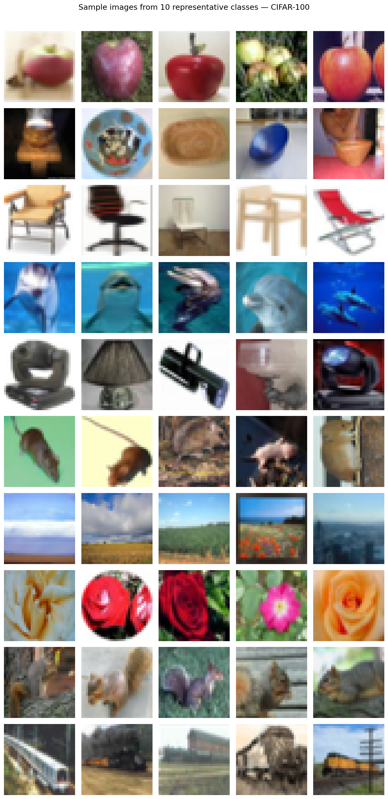
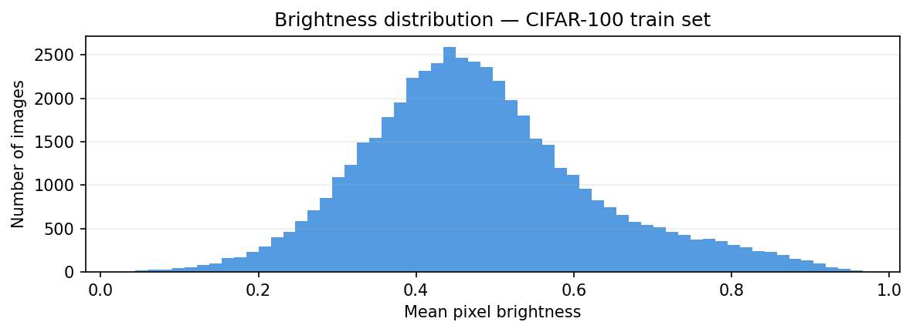
Channel-wise means and standard deviations on the training set (used for normalization):
| Statistic | R | G | B |
|---|---|---|---|
| Mean | 0.5071 | 0.4866 | 0.4409 |
| Std | 0.2673 | 0.2564 | 0.2762 |
We use four pretrained models: two CNNs (ResNet-50, EfficientNet-B3) and two Vision Transformers (Swin-T, ViT-B/16). CNNs build representations through local convolution; ViTs use global self-attention (or windowed attention in Swin) to relate distant image regions.
| Model | Type | Params | Key mechanism | Pretrained on |
|---|---|---|---|---|
| ResNet-50 | CNN | 23.7M | Residual connections | ImageNet-1k |
| EfficientNet-B3 | CNN | 10.8M | Compound scaling + SE | ImageNet-1k |
| Swin-T | ViT | 27.6M | Shifted window attention | ImageNet-1k |
| ViT-B/16 | ViT | 85.8M | Global self-attention | ImageNet-21k |
ResNet-50 uses residual (skip) connections so gradients can flow through deep stacks; bottleneck blocks yield a 2048-D embedding before the classification head (~23.7M parameters).
EfficientNet-B3 scales depth, width, and resolution together (compound scaling), uses depthwise separable convolutions and Squeeze-and-Excitation blocks, and is lighter (~10.8M parameters) than ResNet-50 while remaining competitive.
Swin-T is hierarchical: shifted-window attention keeps cost manageable versus full global attention on dense feature maps (~27.6M parameters).
ViT-B/16 splits the image into 16×16 patches, adds a learnable class token, and stacks 12 Transformer layers with 12 heads (~85.8M parameters). It is pretrained on the larger ImageNet-21k regime.
We fine-tune the full network from epoch 1, using a higher learning rate on the classification head than on the backbone, without an initial frozen-backbone phase. Inputs are upsampled from 32×32 to 96×96. Training employs random crop (padding 12) and horizontal flip; validation and test use resize only and the same normalisation as in §02.
| Transform | Train | Val / test |
|---|---|---|
| Resize | 96 × 96 | 96 × 96 |
| Random crop (extra padding 12 px) | Yes | No |
| Random horizontal flip | Yes | No |
| Per-channel normalisation (§02 stats) | Yes | Yes |
Optimization uses AdamW with weight decay 10−4 and label smoothing 0.1. To limit catastrophic forgetting of pretrained features, the classification head uses a higher learning rate than the backbone; the learning rate follows a cosine schedule over the training epochs.
| Hyperparameter | Value |
|---|---|
| Optimizer | AdamW |
| Head learning rate | 10−4 |
| Backbone learning rate | 10−5 |
| Weight decay | 10−4 |
| Label smoothing | 0.1 |
| Batch size | 128 |
| Train / val split | 80% / 20% of CIFAR-100 train |
| LR schedule | Cosine decay to end of training |
| Loss | Cross-entropy |
| Model | Type | Epochs | Mean s / epoch | Total wall time |
|---|---|---|---|---|
| ResNet-50 | CNN | 25 | 108 | 2703 s |
| EfficientNet-B3 | CNN | 25 | 99 | 2484 s |
| Swin-T | ViT | 20 | 122 | 2445 s |
| ViT-B/16 | ViT | 20 | 294 | 5875 s |
GPU training (e.g. T4). Wall time is the full run in seconds; mean seconds per epoch is total divided by epochs, rounded. For each model we save the weights that achieved the best validation accuracy during training.
All four models follow the protocol in §03 (full-network fine-tuning from the first epoch). Validation entries are the best accuracy and macro-averaged F1 observed on the 10,000-image hold-out (20% of the 50,000 training images) and determine checkpoint selection. Test entries report accuracy and macro F1 on the official 10,000-image CIFAR-100 test set using those checkpoints. Validation and test are well aligned; test accuracy is slightly below the best validation value for most models. ViT-B/16 attains the highest scores on both splits; the gap between ResNet-50 and ViT-B/16 on test is on the order of 14 percentage points.
| Model | Type | Params | Epochs | Val acc | Val F1 | Test acc | Test F1 |
|---|---|---|---|---|---|---|---|
| ResNet-50 | CNN | 23.7M | 25 | 0.7577 | 0.7546 | 0.7515 | 0.7492 |
| EfficientNet-B3 | CNN | 10.8M | 25 | 0.7105 | 0.7076 | 0.7030 | 0.7020 |
| Swin-T | ViT | 27.6M | 20 | 0.8652 | 0.8644 | 0.8592 | 0.8590 |
| ViT-B/16 | ViT | 85.8M | 20 | 0.8919 | 0.8909 | 0.8910 | 0.8912 |
Section 05 reports confusion and per-subclass analyses using the same checkpoints on the test split.
Predictions are grouped into CIFAR-100’s 20 superclasses (five fine classes each) and examined at three levels below. All figures use the official test set and the checkpoints from §04; the text matches the heatmaps and bar charts shown, with model ordering consistent with test accuracy in §04.
For ViT-B/16, the matrix is dominated by the diagonal: most superclasses achieve correct superclass rates between 0.93 and 0.98, with aquatic mammals and small mammals nearer 0.90. Off-diagonal mass is modest; confusion between vehicles 1 and vehicles 2 is about 3–4%, with smaller exchanges (about 2–3%) between aquatic mammals and fish and among mammal groups.
Swin-T follows a similar pattern with somewhat wider spread. The lowest diagonal entries are aquatic mammals (about 0.86), reptiles (about 0.87), and medium and small mammals (about 0.88); many remaining superclasses remain at 0.95 or above. Vehicles 1 and vehicles 2 still overlap at roughly 3%.
ResNet-50 yields a weaker diagonal: small mammals, aquatic mammals, and medium mammals fall to about 0.75–0.77, whereas flowers and people remain near 0.93. Off-diagonal structure is more pronounced—for example aquatic mammals versus fish (about 7%), large outdoor natural versus trees (about 6%), and vehicles 1 versus vehicles 2 (about 5–6%)—in addition to broader mammal–mammal confusion.
EfficientNet-B3 exhibits the least compact superclass separation among the four models: reptiles and aquatic mammals reach only about 0.69–0.70, with several mammal superclasses between 0.72 and 0.77. Confusion exceeds that of ViT-B/16 and Swin-T; for instance, medium versus small mammals and aquatic mammals versus fish approach 8%, and the two vehicle superclasses mutually confuse at roughly 8–9%.
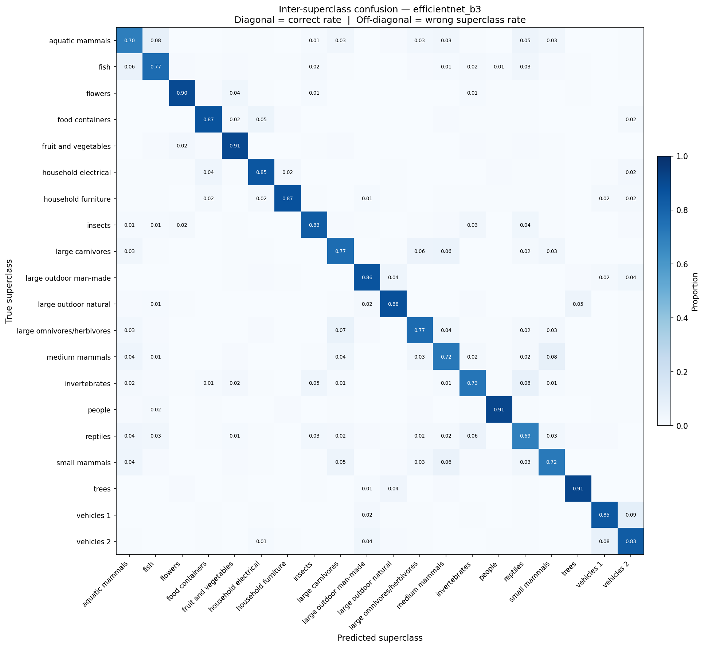
Each bar is the fraction of test samples for which the superclass prediction is correct while the fine-grained label is wrong. The people superclass contributes the largest share for every backbone (EfficientNet-B3 about 0.44, ResNet-50 about 0.39, Swin-T about 0.32, ViT-B/16 about 0.24). Trees rank second throughout (about 0.19 on ViT-B/16 up to about 0.33 on ResNet-50).
ViT-B/16 keeps intra-superclass error for most other groups below about 0.09; aquatic mammals lies near that level. The lowest values correspond to household electrical and vehicles 2 (near 0.01). Swin-T is similar, with medium mammals especially low (near 0.01) and most non-people superclasses below the 8% band in the colour scale.
ResNet-50 and EfficientNet-B3 show further elevated bars—including aquatic mammals, flowers, household furniture, and small mammals on EfficientNet (several values between 0.15 and 0.25)—so fine-grained errors are not confined to people and trees. The legend encodes red as above 15%, orange as 8–15%, and green as below 8%.
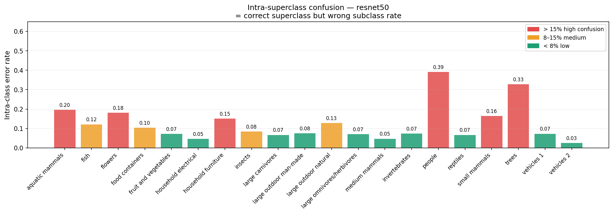
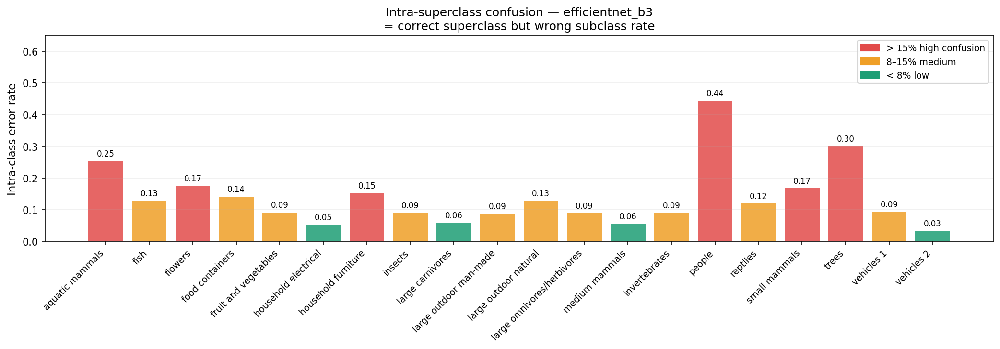
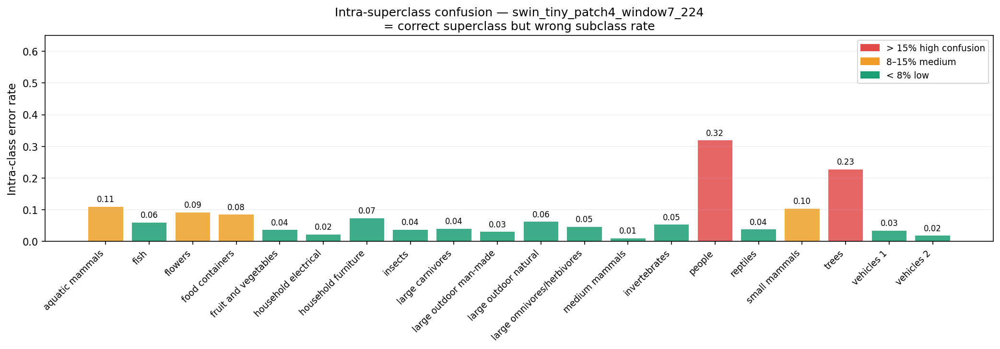
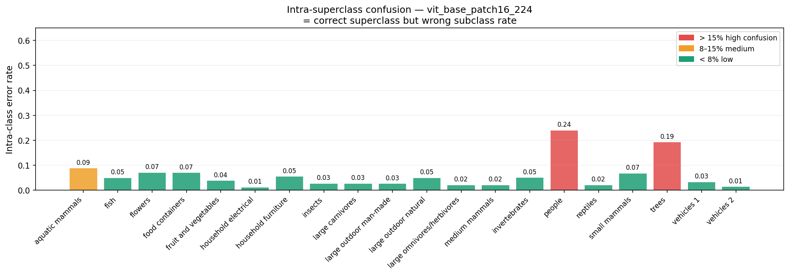
The ViT-B/16 subclass panel includes a dashed mean line near 0.89 test accuracy per fine class. The people group (baby, boy, girl, man, woman) lies mostly below that mean; boy and girl are the lowest bars, which aligns with the high intra-people error noted above. Tree classes also fall below the mean, consistent with difficult foliage discrimination at 96×96 resolution.
The highest per-class bars on the ViT-B/16 plot include large outdoor man-made objects (for example skyscraper), several vehicles 2 classes (lawn mower, tank), and distinctive animals such as shark; many insect and carnivore subclasses lie near or above the mean. The ResNet-50 and EfficientNet-B3 panels show the same qualitative pattern, with people and trees furthest below the mean, though absolute levels on those difficult classes are lower than for ViT-B/16.
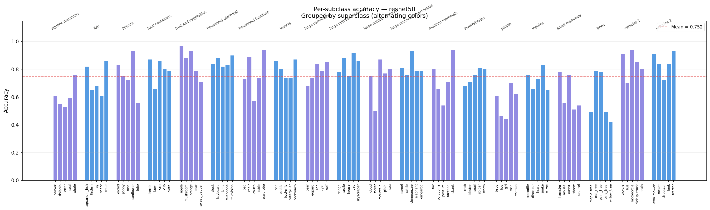
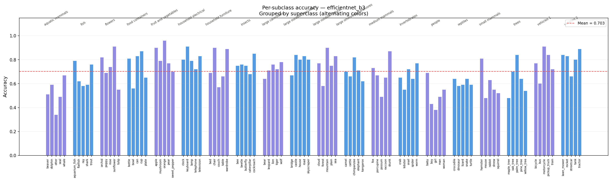
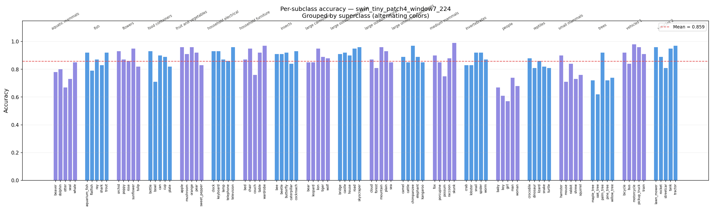
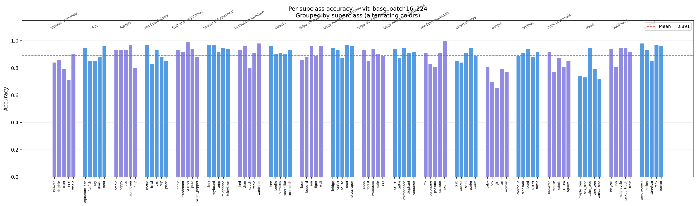
Strategy A denotes full fine-tuning from epoch 1 (§03–§04). Strategy B freezes the backbone for an initial segment of training, then unfreezes and continues with the same layerwise learning rates. Strategy B test figures use the best phased checkpoints, evaluated on the official test set with the same procedure as in §04.
| Model | Val acc | Val F1 | Test acc | Test F1 | Total (s) |
|---|---|---|---|---|---|
| ResNet-50 | 0.7577 | 0.7546 | 0.7515 | 0.7492 | 2703 |
| EfficientNet-B3 | 0.7105 | 0.7076 | 0.7030 | 0.7020 | 2484 |
| Swin-T | 0.8652 | 0.8644 | 0.8592 | 0.8590 | 2445 |
| ViT-B/16 | 0.8919 | 0.8909 | 0.8910 | 0.8912 | 5875 |
Phase 1: backbone frozen, train the head only. Phase 2: unfreeze and train the full network with the same layerwise learning rates as Strategy A. Epoch budget: CNNs 5 + 20; ViT family 3 + 17.
| Model | Val acc | Val F1 | Test acc | Test F1 | Total (s) |
|---|---|---|---|---|---|
| ResNet-50 | 0.7345 | 0.7309 | 0.7303 | 0.7283 | 2498 |
| EfficientNet-B3 | 0.6930 | 0.6900 | 0.6906 | 0.6891 | 2188 |
| Swin-T | 0.8650 | 0.8640 | 0.8620 | 0.8618 | 2524 |
| ViT-B/16 | 0.8888 | 0.8882 | 0.8882 | 0.8884 | 6027 |
On validation, Strategy A is at least as accurate as Strategy B for all four backbones (the margin is largest for the CNNs; Swin-T is nearly tied). On test, Strategy A remains ahead for ResNet-50, EfficientNet-B3, and ViT-B/16, while Swin-T is slightly higher under Strategy B. Wall times for Strategy B are not uniformly lower than for Strategy A.